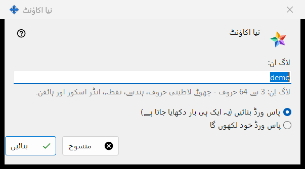
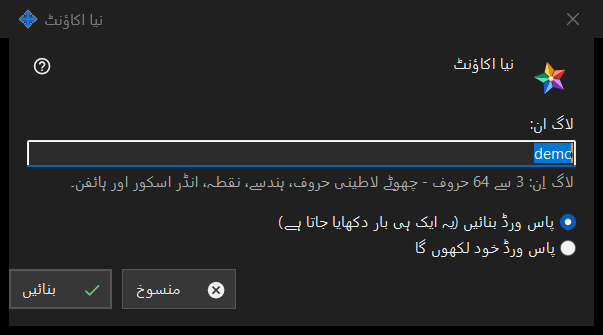

نیا اکاؤنٹ
یہ کس مقصد کے لیے ہے
ایک ونڈو، دو موڈ۔ نیا اکاؤنٹ آپ کے چلائے ہوئے Media Exchange Server میں اکاؤنٹ شامل کرتا ہے؛ پاس ورڈ ری سیٹ: <لاگ ان> موجودہ اکاؤنٹ کو نیا پاس ورڈ دیتا ہے۔ یہ Share Manager کی ترتیبات کے Media Exchange Server صفحے پر اکاؤنٹس کی فہرست کے نیچے کے اکاؤنٹ شامل کریں.. اور پاس ورڈ ری سیٹ کریں.. بٹنوں سے کھلتی ہیں؛ ری سیٹ کے لیے اکاؤنٹ منتخب ہونا ضروری ہے۔


اس ترتیب میں
- شامل کرنے والے موڈ میں لاگ اِن لکھیں۔
- چنیں کہ پاس ورڈ کیسے بنے۔
- ری سیٹ موڈ میں طے کریں کہ اکاؤنٹ کے تمام آلات سائن آؤٹ ہوں یا نہیں۔
- بنائیں یا ری سیٹ کریں دبائیں۔
- اگلی ونڈو سے بنا ہوا پاس ورڈ کاپی کریں، یا اپنا پاس ورڈ لکھیں۔
عناصر
پہلے اکاؤنٹ کا بیان
بالکل پہلے اکاؤنٹ پر ونڈو اس سطر سے شروع ہوتی ہے جس میں لکھا ہے: پہلا اکاؤنٹ بنانے سے پہلے پڑھیں کہ سرور کا آپریٹر کیا دیکھ سکتا ہے، اور اس کے نیچے بیان والا صرف پڑھنے کا خانہ ہوتا ہے۔ بعد کے اکاؤنٹس اور ری سیٹ پر یہ نہیں دکھایا جاتا۔
لاگ اِن
صرف شامل کرنے والے موڈ میں۔ 3 سے 64 حروف: چھوٹے لاطینی حروف، ہندسے، نقطہ، انڈر اسکور اور ہائفن؛ بڑے حروف چھوٹے ہو جاتے ہیں۔ جب تک متن لاگ اِن نہیں بن سکتا، اشارہ انتباہی رنگ میں رہتا ہے، اور تب تک بنائیں آگے نہیں بڑھتا۔
پاس ورڈ کیسے بنتا ہے
پاس ورڈ بنائیں (یہ ایک ہی بار دکھایا جاتا ہے) طے شدہ اختیار ہے: پروگرام قواعد پر پورا اترنے والا بے ترتیب پاس ورڈ بناتا ہے اور اگلی ونڈو اسے صرف ایک بار دکھاتی ہے۔ پاس ورڈ خود لکھوں گا اکاؤنٹ کا پاس ورڈ ونڈو کھولتا ہے، جہاں ایک براہِ راست سطر بتاتی ہے کہ کیا کم ہے: کم از کم 10 حروف، ایک بڑا اور ایک چھوٹا لاطینی حرف اور ایک ہندسہ۔
ہر آلے کو سائن آؤٹ کرنا
صرف ری سیٹ موڈ میں۔ اس اکاؤنٹ کے تمام آلات کو فوراً سائن آؤٹ بھی کریں بطورِ طے شدہ نشان زد ہوتا ہے۔ تب نتیجے کی سطر بتاتی ہے کہ پاس ورڈ بدل گیا اور اکاؤنٹ کے تمام آلات سائن آؤٹ ہو گئے؛ نشان کے بغیر وہ صرف اتنا بتاتی ہے کہ پاس ورڈ بدل گیا۔
سرور کے قبول کرنے کے بعد
نتیجے کی سطر بتاتی ہے کہ اکاؤنٹ بن گیا۔ بنایا گیا پاس ورڈ اپنی الگ ونڈو میں ایک ہی بار دکھائی دیتا ہے، جس میں پاس ورڈ کاپی کریں اور اپنا پاس ورڈ سیٹ کریں.. ہیں؛ دوسرا بٹن ری سیٹ پر واپس لے جاتا ہے، جہاں خود لکھنے والا اختیار چنا ہوتا ہے۔ اس پی سی پر اکاؤنٹس کے پاس ورڈ محفوظ رکھیں آن ہو تو پاس ورڈ اس پی سی پر بھی محفوظ کیا جاتا ہے اور اکاؤنٹ کو پاس ورڈ دکھائیں.. بٹن ملتا ہے۔ اگر اس بلڈ میں ایکسچینج کلائنٹ کی سہولتیں ہوں اور اس پی سی کا اپنا کوئی اکاؤنٹ نہ ہو، تو یہ اسی پاس ورڈ سے اکاؤنٹ کے پہلے آلے کے طور پر سائن اِن ہو جاتا ہے۔
مینیجر کی ترتیبات · SFTP اشتراک کی ترتیبات · ایکسچینج سرور کی ترتیبات